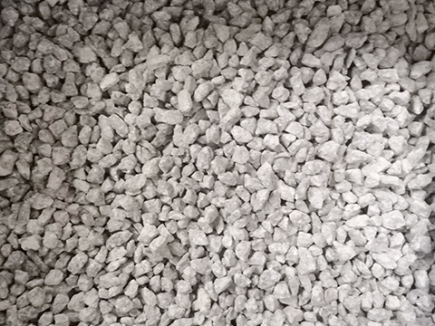

ПИСАРІВСЬКИЙ
ГРАНІТНИЙ
КАР'ЄР
Чому саме МИ?
-
Висока якість продукції
-
Значні виробничі потужності
-
Гнучка цінова політика
-
Індивідуальний підхід
-
Надійне постачання будь-яким транспортом
-
Найширший вибір умов постачання
Про нас
Писарівське родовище граніту розробляється з 1970 року. Товариству на праві власності належить: завод на якому проведено суттєву реконструкцію технологічної схеми дробильно-сортувального заводу (реконструйований у 2013 році), адміністративні, складські споруди та придбані гідравлічні екскаватори, автосамоскиди завдяки чому, виробничі потужності товариства складають 600 000 м.куб по видобутку гірничої маси за рік.
Основним видом діяльності товариства є видобування граніту та виробництвом щебеневої продукції.
У лютому 2020 р. введений в експлуатацію європейську якість транспортування:
- вагонна вагова для коректного дозування щебеню у вагони з урахуванням усіх необхідних вимог;
- залізничною рампою для навантаження продукції;
- власним залізничним плечем для транспортування щебеню;
- на ст. Гулівці (ПЗЗ, код ст. №337008) збільшено вантажопотік до 1 000 000 тонн на рік (в середньому 1 200 вагонів на місяць).
Підприємство має власну сертифіковану лабораторію для контролю якості продукції, що виробляється. Якість щебеню відповідає ДСТУ Б В.2.7-30: 2013, ДСТУ 2.7-75-98, 1 клас радіації, колір сірий.
Продукція
Гранітний щебінь – матеріал із твердої гірської породи зернистої будови, яка є найпоширенішою на Землі. Щебінь, будучи нерудним матеріалом, має цілу низку специфічних якостей, визначальних його якість, ціну і значимість у будівельній галузі. До таких властивостей відносяться такі:
-
Адгезія щебеню
Здатність поверхні щебеню зв'язуватися (зчіплюватися) з бітумними в'яжучими матеріалами. Чим вище цей показник у зразка щебеню, тим ширше можливість його застосування в деяких будівельних галузях. Адгезія сірого і темно-сірого щебеню, як правило, має більш високе значення, ніж адгезія щебеню інших кольорів.
-
Ліщадність
Частинки щебеню після дроблення можуть мати різну форму - кубовидну (більш рівномірну в обсязі), плоску (лещадную), голчасту. Підвищений вміст в одиниці об'єму частинок щебеню з лещадної (плоскою або голчастої) формою є показником низької якості щебеню.
-
Зерновий склад
Якісна характеристика щебеню, що показує наявність частинок більшого або меншого розміру в регламентованій фракції.
-
Вміст глинистих та пилоподібних частинок
Присутність цих включень у зразках щебеню негативно позначається, в першу чергу, на його міцності. Масова процентна складова всіх цих включень в пробі щебеню строго нормується і не повинна перевищувати встановлених величин.
-
Радіоактивність щебеню
Одна з найважливіших характеристик щебеню. Рівень радіоактивності щебеню контролюється і підтверджується сертифікатами та висновками санітарно-епідеміологічних аналізів.
-
Морозостійкість щебеню
Стійкість щебеню до циклів заморожування і розморожування. По морозостійкості щебінь підрозділяють на марки: F15; F25; F50; F100; F150; F200; F300; F400. Для будівельних конструкцій застосовують щебінь з показником морозостійкості не менше F300.
-
Водопроникність
Здатність зерен щебеню пропускати воду під тиском. Водопроникність характеризується кількістю води, що пройшла протягом однієї години через зразок площею 1 кв. м і товщиною 1м при постійному тиску.
-
Вологовіддача
Здатність щебеню втрачати вологу що знаходиться в його порах. Показником водовіддачі є час у годинах, знадобилася для висушування зразка до постійної маси.
-
Водопоглинання
Здатність частинок щебеню вбирати і утримувати в своїх порах вологу. Водопоглинання обчислюють у відсотках за зміни маси або об'єму за допомогою формул.
-
Гігроскопічність
Здатність щебеню поглинати вологу з навколишнього повітря. Гігроскопічність впливає на такі показники, як міцність, стабільність маси, форми і розміру. Занадто висока гігроскопічність щебеню є його негативною якісною характеристикою.
- <
-
-
-
-
-
-

-

-
Фракційний склад
Фракційний склад і форма зерен щебеню багато в чому визначаються технологією його виробництва та якістю породи, з якого він виробляється. Фізико-механічні властивості щебеню виробленого на діючому ДСЗ:
- Марка щебеню за міцністю – 1200-1400;
- Марка щебеню по зносу – СТ-1;
- Марка з морозостійкості – МРЗ-300
- Радіаційна оцінка – 1 клас (150-170 бк/кг)
- Наявність зерен пластинчастих та голкової форм до 15%
- Насипна густина – 1,39 т/м3.
Фінаансові звіти
-
2019
-
2020
-
2021